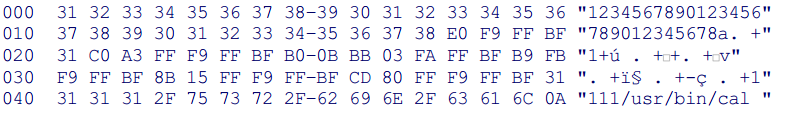

| เป็นการแทรก code เข้าไปในระบบ ซึ่งเมื่อมีผู้ไม่หวังดีแทรกคำสั่งของระบบ (command) เข้าไปเพื่อทำให้ระบบทำงานผิดพลาด หรือการเข้าไปถึงข้อมูลที่ไม่ได้รับอนุญาต
รหัสผ่านที่คุณจะได้รับโปรแกรมที่แสดงในรูป 2.2 จะแสดงการถูกนำไปใช้ประโยชน์ในการเรียกใช้ชุดคำสั่งที่สร้างขึ้นเองได้ เวลานี้โปรแกรมถูกคอมไพล์ของ Red Hat Linux 9.0 โดยใช้ GCC ข้อบกพร่องสามารถเข้าไปในโปรแกรมผ่านไฟล์ข้อมูล Binary ( ตามที่แสดงในรูป 2.2 ) จากไฟล์โดยใช้การเปลี่ยนทิศทางเป็นดังนี้ :
% ./BufferOverflow < exploit.bin |
||
|

รูป 2.2 Contents of binary file exploit.bin containing shellcode |
||
ไฟล์ข้อมูลแบบ Binary ที่ไม่สามารถมีบรรทัดใหม่หรืออักขระ NULL จนไบต์สุดท้ายเนื่องมาจากการใช้ประโยชน์จากฟังก์ชันสตริงที่มักจะขึ้นอยู่กับการที่ใช้ฟังก์ชัน gets ( ) โดยการเรียกฟังก์ชัน gets () แปลความหมายเป็นอักขระ Null เป็นสตริงอักขระและการยุติการอ่านข้อมูลบรรทัดใหม่จนกว่าจะมีอักขระหรือเงื่อนไขที่มีการตรวจพบ process |
||